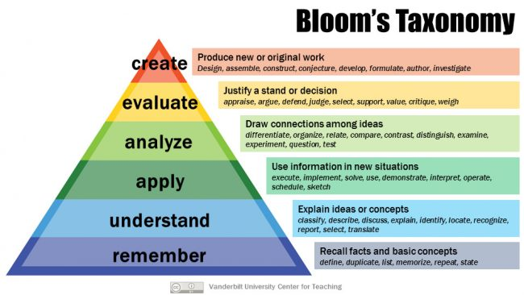

Reasoning & Influences
Practical learning through workshops allows students to progress through the stages of Bloom’s Taxonomy more naturally. For instance, in a technical design workshop, students first remember and understand basic concepts such as design principles and materials properties. As they move into application, they begin to use these principles in hands-on projects. The process of analyzing their designs for functionality, efficiency, and aesthetics encourages deeper cognitive engagement. Finally, through evaluation and creation, students refine their projects and potentially innovate, developing original designs based on their understanding. These higher-order cognitive skills are critical in preparing students for future problem-solving and decision-making, skills that are highly sought after in today’s rapidly changing world. Thus, I believe incorporating practical workshops is essential in nurturing students' intellectual growth and engagement.

Another key element of my educational philosophy is the incorporation of Enquiry-Based Learning (EBL), a student-centered approach that encourages learners to take the lead in their education. EBL fosters curiosity and critical thinking by prompting students to ask questions, conduct research, and explore topics based on their interests. This process is empowering, as it positions students as active participants in their learning journey rather than passive recipients of information. In a workshop setting, for example, students might be tasked with developing solutions to real-world problems using design and technology. Through this inquiry-driven process, they develop not only subject-specific knowledge but also essential skills such as collaboration, research, and self-directed learning.
Enquiry-Based Learning also aligns with the upper levels of Bloom’s Taxonomy, as students are constantly analyzing, evaluating, and creating during the learning process. This method of student-led learning encourages ownership and motivation, as students are more likely to engage deeply with content they find personally meaningful. It also caters to diverse learning styles, as students can approach problems from different angles, thus allowing for personalized learning experiences.
Familiarly known as Bloom's Taxonomy, this framework has been applied by generations of K-12 teachers and college instructors in their teaching. The framework elaborated by Bloom and his collaborators consisted of six major categories: Knowledge, Comprehension, Application, Analysis, Synthesis, and Evaluation.
One-Size-Fits-All
However, I have a critique of traditional education models, particularly the "one-size-fits-all" approach, stems from its limitations in addressing individual differences in learning. In her 2009 book, Tagore, Dewey, and the Imminent Demise of Liberal Education, Martha Nussbaum highlights the importance of education in fostering Socratic self-criticism, arguing that this critical capacity justifies the government's role in mandating education. While Nussbaum's perspective underscores the societal importance of education, it overlooks the variation in how individuals learn. The imposition of a uniform curriculum or teaching method fails to recognize that students come from diverse backgrounds, have different strengths, and possess varying learning needs.
A standardized approach often leaves students disengaged or frustrated, particularly those whose learning styles or interests do not align with the traditional model. In contrast, practical learning through workshops and Enquiry-Based Learning allows for differentiation, acknowledging and accommodating the individuality of students. By moving away from rigid, one-size-fits-all practices and embracing more flexible, student-centered approaches, educators can better meet the needs of all learners, ensuring that education is inclusive and equitable.
In conclusion, my educational philosophy is grounded in the belief that practical learning through workshops and student-led enquiry-based approaches fosters deeper learning, critical thinking, and individual growth. By embracing these methodologies, educators can move beyond the limitations of traditional, standardized models and create more dynamic and personalized learning environments that prepare students for a complex and ever-changing world.
A standardized approach often leaves students disengaged or frustrated, particularly those whose learning styles or interests do not align with the traditional model. In contrast, practical learning through workshops and Enquiry-Based Learning allows for differentiation, acknowledging and accommodating the individuality of students. By moving away from rigid, one-size-fits-all practices and embracing more flexible, student-centered approaches, educators can better meet the needs of all learners, ensuring that education is inclusive and equitable.
Conclusion
In conclusion, my educational philosophy is grounded in the belief that practical learning through workshops and student-led enquiry-based approaches fosters deeper learning, critical thinking, and individual growth. By embracing these methodologies, educators can move beyond the limitations of traditional, standardized models and create more dynamic and personalized learning environments that prepare students for a complex and ever-changing world.